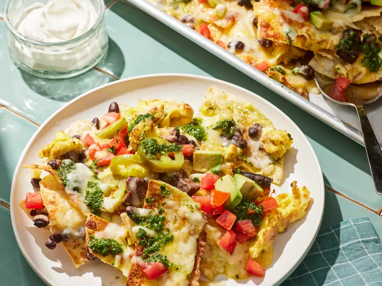

Breakfast Nachos

Description
These breakfast nachos are a play on steak and eggs and they're out of this world. Salty tortilla chips are layered with sliced seared flat iron steak, eggs, beans, and cheese, broiled, dressed with everything else nacho, then finished with a zingy chimichurri sauce.
Ingredients
- 1 (8 ounce) flat iron steak, patted dry
- 3/4 teaspoon kosher salt, divided
- 1/2 teaspoon ground black pepper, divided
- 1/2 teaspoon ground cumin (optional)
- 2 tablespoons olive oil
- 8 large eggs
- 1 (11 ounce) package tortilla chips (such as Tostitos®)
- 2 (8 ounce) packages shredded Mexican cheese blend (such as Tilamook®)
- 1 (15 ounce) can black beans, drained and rinsed
- 1 cup chopped plum tomatoes
- 1 avocado, chopped
- 1/2 cup drained pickled jalapeno slices
- 1/2 cup sour cream, or as needed
Steps
- Gather all ingredients.
- For steak: Sprinkle steak evenly with 1/2 teaspoon of the salt, 1/4 teaspoon of the black pepper, and cumin, as desired. Heat a medium cast-iron skillet over medium-high for 5 minutes. Add steak and 1 tablespoon of the oil, swirling to distribute oil evenly. Cook, undisturbed, until nicely browned and a thermometer inserted into thickest portion of steak registers 120 degreed F (49 degrees ) for rare, about 3 minutes per side. Transfer to a cutting board, and let rest 10 minutes. Do not wipe skillet clean.
- Meanwhile, whisk together eggs and remaining 1/4 teaspoon each salt and black pepper in a medium bowl until thoroughly blended. Heat cast-iron skillet over medium. Add remaining 1 tablespoon oil and eggs; cook, stirring occasionally, until just set, about 2 minutes. Transfer to a bowl; cover, and set aside.
- Preheat the oven’s broiler and place a rack about 12 inches from the heat source. Line a large rimmed baking sheet with aluminum foil.
- To assemble nachos, arrange half of tortilla chips in an even layer on prepared baking sheet. Thinly slice steak across the grain, and cut into 3/4-inch pieces. Sprinkle tortilla chips evenly with half of steak, half of beans, half of eggs, and half of Mexican blend cheese. Repeat with remaining chips, steak, beans, eggs, and cheese.
-